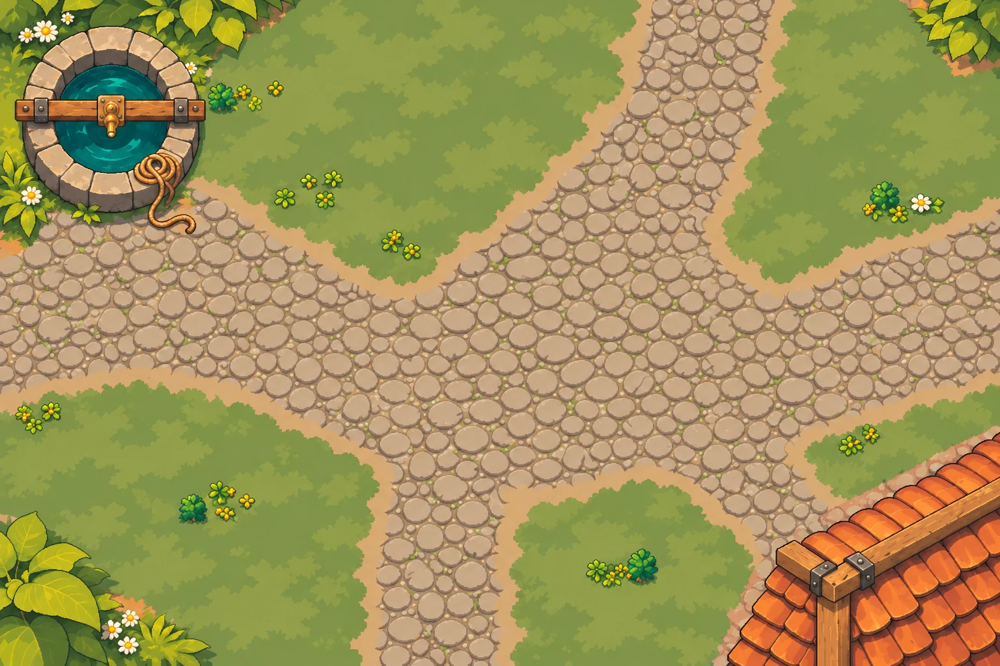

ZQSD / flèches pour courir, Maj pour marcher, Espace pour glisser et F pour frapper à l’épée. Maintiens le clic pour bander l’arc et relâche pour tirer. Maintiens une touche de 1 à 4, vise et relâche pour lancer la compétence. Le clic droit annule la visée.
Sur écran tactile, maintiens une compétence, glisse jusqu’à la cible et relâche. La source te soigne quand tu t’en approches.
Le héros porte la cape brodée de la variante C. Ses quatre poses à l’épée, ses poses de tir, le garde au bouclier et le lancier sont animés à partir des planches du Hameau. La cour et les cristaux reprennent la maquette de Prison de glace.
Les chemins de la cour reprennent le tracé du prototype aux textures de Melissa Krautheim, profpatonildo et ansimuz.